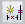

Show how a profile or sketch can change
-
In 3D environments, highlight and lock a sketch plane.
For more information, see the Help topic, Lock or unlock a sketch plane.
-
Choose the Tools tab→Assistants group→Relationship Assistant

. -
Drag a fence around the profile elements you want to evaluate, and then click the Accept (check mark) button on the command bar.
-
On the command bar, click the Show Variability button.
Tip:-
The Relationships Needed box on the command bar displays the number of relationships needed to fully constrain the profile. There is also graphical feedback which indicates how the profile can change.
-
If you select elements that cannot change, as well as elements that can change, Show Variability will indicate that no elements can change, and the number of relationships needed will be 0.
-